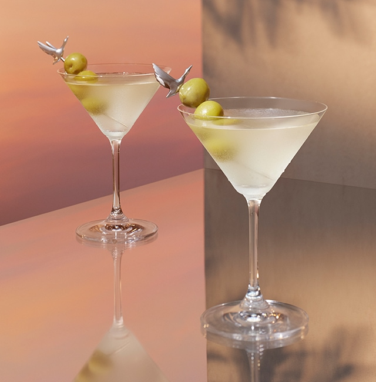

Recette du Martini

Ingrédients :
- 6 cl de gin
- 1 cl de vermouth dry (sec)
- Quelques glaçons
- 1 zeste de citron ou une olive verte pour la décoration
Préparation :
- Remplissez un verre à mélange de glaçons pour le rafraîchir, puis videz-le.
- Ajoutez le gin et le vermouth dans le verre à mélange.
- Mélangez doucement à l'aide d'une cuillère pendant environ 30 secondes.
- Filtrez le mélange dans un verre à cocktail bien frais.
- Décorez avec un zeste de citron ou une olive verte selon votre préférence.
- Servez immédiatement.
Retour à l'accueil